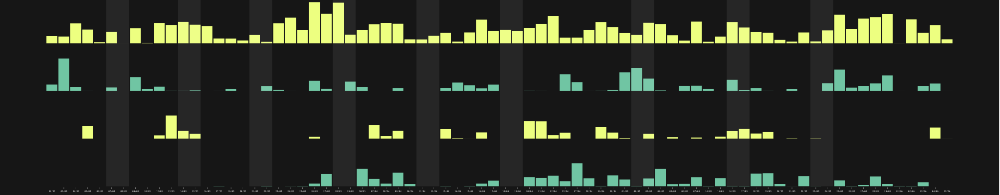

Rappresentazione grafica di una serie di dati raccolti in relazione al tempo di utilizzo di alcune app. Il perido nel quale sono stati raccolti questi dati è all'incirca tre mesi, dai primi di Marzo alla prima settimana di Giugno. Ogni riga del grafico si riferisce ad una categoria di applicazioni.
